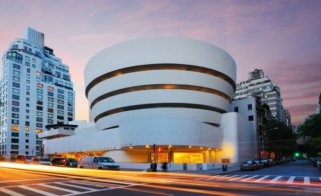
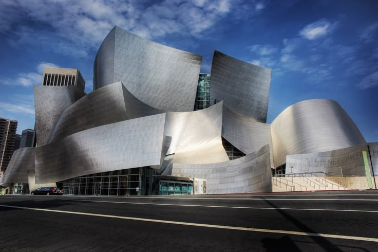
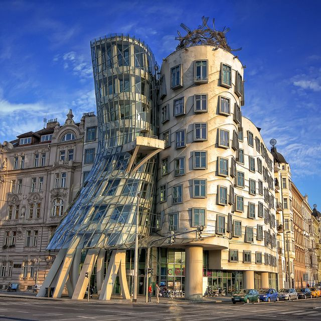

Profile N°02
Frank Gehry
Canada · United States — b. 1929
Architect · Pritzker Prize Laureate
Canada · United States — b. 1929
Architect · Pritzker Prize Laureate
Frank Gehry (b. 1929) is a Canadian-American architect celebrated as one of the leading figures of deconstructivist architecture. Born in Toronto, he moved to Los Angeles as a teenager and later studied at the University of Southern California and Harvard's Graduate School of Design.
Gehry is known for sculptural, often metal-clad buildings that appear to twist and fold in space. His 1997 Guggenheim Museum Bilbao became a cultural landmark almost overnight, credited with revitalizing an entire city and coining the term the "Bilbao Effect."
Working through hand sketches and physical models before turning to digital modeling software, Gehry's design process treats architecture as sculpture — expressive, improvisational, and deeply personal.
28 February 1929
Canadian-American
Deconstructivism
Gehry Partners
1989
Guggenheim Museum Bilbao

Spain — the titanium-clad museum that redefined what a cultural building could do for a city.

Los Angeles, USA — a stainless-steel concert hall celebrated for both its acoustics and its sculptural form.

Prague, Czech Republic — designed with Vlado Miluníć, its twisting silhouette earned the nickname 'Fred and Ginger.'
Gehry treats buildings the way a sculptor treats material — through iteration, instinct, and a willingness to let a design stay unresolved until it feels right. He has spoken often about architecture needing to belong to its moment while still reaching for something lasting.
Frank Owen Goldberg was born in Toronto, Canada.
Completed his architecture degree at the University of Southern California.
Opened his own office in Los Angeles, later becoming Gehry Partners.
Awarded architecture's highest honor for his body of work.
Completed the museum that would define his international reputation.